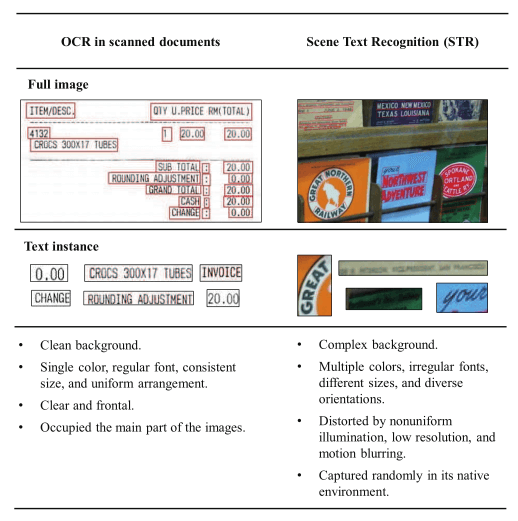
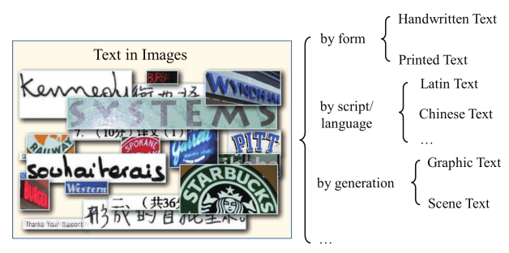
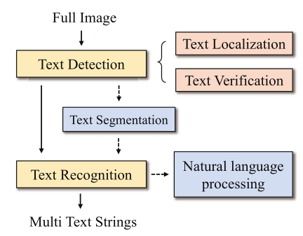
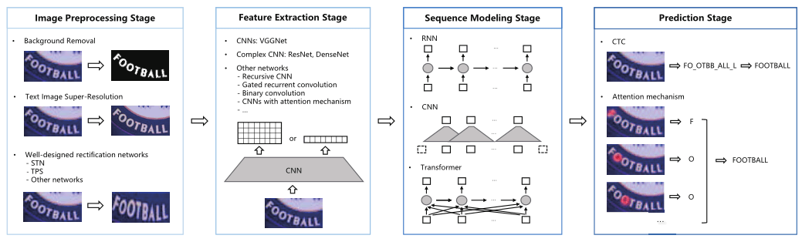
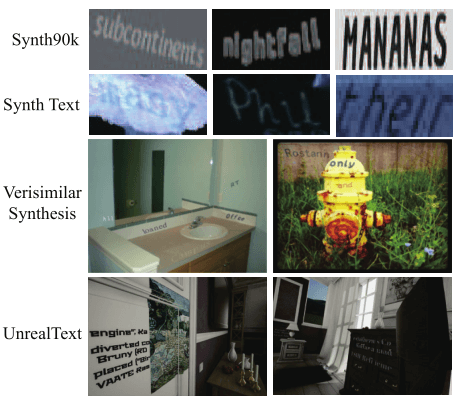
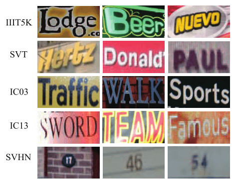
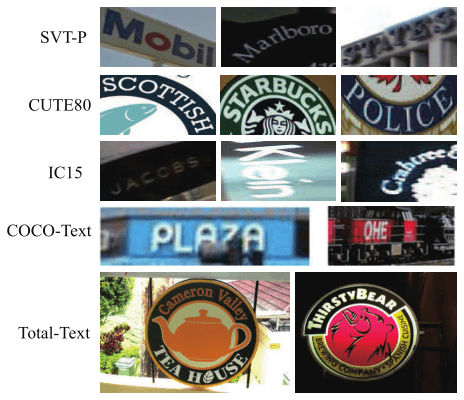
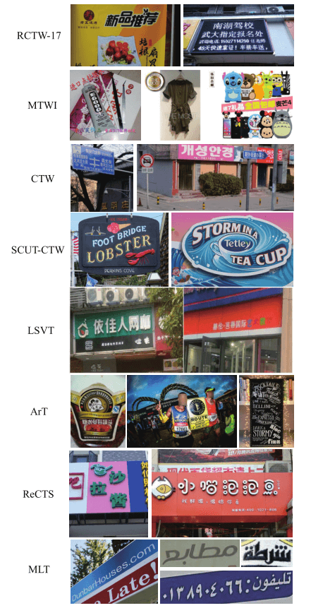

Paper-Text Recognition in the Wild-A Survey
全文
内容
- 总结场景文本识别的基本问题和研究现状
- 提出新的见解和想法
- 对公共资源进行全面审查
- 指出今后的工作方向
INTRODUCTION

分析了场景文本与扫描文本相比：
- 字体更不规则，更具多样性
- 噪声更多
- 摄影角度更复杂

对于场景识别领域：
- by form
- Handwritten Text
- Printed Text
- by script / language
- Latin Text
- Chinese Text
- …
- by generation
- Graphic Text
- Scene Text
BACKGROUND

对于一个 End-to-end system 端到端系统：
- 输入 Full Image
- 文本检测 Text Dection（分为基于回归 和 基于实例分割）
- 文本本地化 Text Localization（画框框：DNN）
- 文本验证 Text Verification（判断框框是文本还是非文本：先验知识、支持向量机 SVM、条件随机场 CRFs、CNN）
- 文本分割 Text Segmentation
- 文本行分割
- 字符分割（早期）
- 文本识别 Text Recognition（将文本实例图像转换为目标图像序列 早期：梯度描述符直方图、连接组件、笔画宽度变换，最近 deep learning encoder-decoder）
- 识别后处理：NLP
特殊问题：
- 字母识别 Script identification 预测给定文本的图像的字母
- 文本增强 Text enhancement 恢复退化的文本，提高文本分辨率，除去文本的扭曲、去除背景
- 文本跟踪 Text tracking 保持文本位置的完整性，在视频中相邻帧之间跟踪文本
- 自然语言处理 NLP
METHODOLOGIES
STR 两个类别：
- 基于分割的方法（将文本行视为一个整体）
- 无分割方法（需要准确检测单个字符，字符检测器 / 分割器的质量通常制约着识别性能，基于分割的识别器无法建模单个字符以外的上下文信息）
- CTC (Connectionist Temporal Classification)是一种避开输入与输出手动对齐的一种方式，是非常适合语音识别或者OCR这种应用的
- 注意力

无分割 STR 中，Image Preprocessing Stage 和 Sequence Modeling Stage 不是必须的
- Image Preprocessing Stage 图像预处理
- Background Removal 背景去除，使用 GAN [128]
- Text Image Super-Resolution 文字图像超分辨率 TextSR [198]
- Well-designed rectification networks 矫正图像
- STN 空间变换网络 [80]
- TPS 薄板样条插值(Thin Plate Spline) [202]
- Other networks
- Feature Extraction Stage 特征提取阶段（将输入文本图像映射到反映字符识别相关的属性表示，同时抑制不相关的特征）
- CNNs: VGGNet
- Complex CNN: ResNet, DenseNet
- Other networks
- Recursive CNN
- Gated recurrent concolution
- Binary convolution
- CNNs with attention mechanism
- Sequence Modeling Stage 序列建模 捕捉字符序列内的上下文信息，以便下一阶段预测每个字符
- RNN
- CNN
- Transformer
- Prediction Stage
- CTC [57]
- 计算成本很大，存在峰值分布，难以应用二维应用问题（不规则场景文本识别）
- 注意力机制 [6]
- 需要更多的存储和计算、文本序列太长不好训练、只集中少数字符类别类别语言、中文不一定好使
- 聚合交叉熵函数 [208]
- CTC [57]
- Liao等人[129]及其扩展工作[98]使用RoIAlign[65]来保存更准确的位置信息，检索每个字符作为通用对象，并使用字符级注释组成最终文本。
- Feng等[45]生成密集检测四边形，并使用所提出的RoISlide将从每个四边形裁剪的特征转换为整流特征。然后将所有文本特征输入基于ctc的识别器，使框架免于字符级注释。
- Wang等人[188]没有将文本检测分支制定为边界盒提取或实例分割任务，而是在边界上本地化了一组点，并采用TPS[202]变换来平坦每个文本的特征。
Qiao等[148]提出了形状变换模块，迭代生成潜在基点，利用TPS将检测到的文本区域转化为不需要额外参数的规则形态。
Liu等[115]引入参数化Bezier曲线自适应拟合任意形状的文本，并设计了一种新的BezierAlign层来精确计算弯曲形状文本实例的卷积特征。
- 上述双线性插值方法的目的是将不规则形状的特征校正为轴向特征，用于文本识别器，其区别在于生成采样网格的方式。然而，Qin等人[150]认为特征校正是泛化不规则形状文本的关键瓶颈。他们引入了RoI掩蔽来过滤掉相邻的文本和背景，这使得识别器不需要校正。
- Xing等[210]直接在完整特征上进行字符检测和识别，没有任何RoI操作
EVALUATIONS AND PROTOCOLS
数据集：

- Synthetic Datasets 合成数据集
- Synth90k
- 90k个常见英语单词的900万个合成文本实例图像。文字通过随机转换和效果呈现在自然图像上，例如随机字体、颜色、模糊和噪声。
- SynthText
- 80万张图片和600万合成文本实例。与生成Synth90k数据集一样，文本示例使用随机选择的字体呈现，并根据局部表面方向进行转换。
- Verisimilar Synthesis
- 500万合成文本实例图像。给定背景图像和源文本，首先确定语义图和显著图，然后结合它们来识别语义上合理和合适的文本嵌入位置。
- UnrealText
- 600K合成图像和1200万剪裁文本实例。它是基于 虚幻引擎4 和 UnrealCV 插件开发
- Synth90k

Realistic Datasets 真实数据集
Regular Latin Datasets 常规拉丁数据集
- IIIT5K-Words (IIIT5K)
- 5000个文本实例图像:2000个用于训练，3000个用于测试
- Street View Text (SVT)
- 350张图像:100张用于训练，250张用于测试。一些图像被噪声、模糊和低分辨率严重损坏。
- ICDAR 2003 (IC03)
- 509张图像:258张用于训练，251张用于测试
- ICDAR 2011 (IC11)
- 485 张图像
ICDAR 2013 (IC13)
- 561张图像:420张用于训练，141张用于测试
Street View House Number (SVHN)
- 自然场景中超过600,000位的门牌号

- IIIT5K-Words (IIIT5K)
弯曲拉丁数据集
- StreetViewText-Perspective (SVT-P)
- 包含238张图像和639个裁剪文本实例
- CUTE80 (CUTE)
- 包含80张高分辨率图像和288个裁剪文本实例
- ICDAR 2015 (IC15)
- 1500张图像:1000张用于训练，500张用于测试。具体来说，它包含2,077个裁剪文本实例
- COCO-Text
- 包含63,686张图像和145,859个裁剪文本实例
- Total-Text
- 包含1555张图片和11459张裁剪文本实例图片。重点研究曲面场景文本识别。
- StreetViewText-Perspective (SVT-P)

- Multilingual Datasets 多语言数据集
- Reading Chinese Text in the Wild (RCTW-17)
- 12514张图片:11514张用于训练，1000张用于测试
- Multi-Type Web Images (MTWI)
- 包含20,000张图像。这是第一个由中文和拉丁文网络文本构建的数据集
- Chinese Text in the Wild (CTW)
- 32,285张高分辨率街景图像和1,018,402个字符实例
- SCUT-CTW1500
- 1500张图像:1000张用于训练，500张用于测试。特别是，它提供了10,751个裁剪文本实例图像，包括3,530个弯曲文本
- Large-Scale Street View Text (LSVT)
- 包含20,000个测试样本，30,000个完全注释的训练样本，以及400,000个带有弱注释的训练样本(即带有部分标签)
- Arbitrary-Shaped Text (ArT)
- 10,166张图像:5,603张用于训练，4,563张用于测试
- Reading Chinese Text on Signboard (ReCTS-25k)
- 25,000张图像:20,000张用于训练，5,000张用于测试
- Multi-lingual Text (MLT-2019)
- 2万张图像:1万张用于训练(每种语言1000张)，1万张用于测试。该数据集包括10种语言，代表7种不同的语言:阿拉伯语、孟加拉语、中文、德文、英语、法语、德语、意大利语、日语和韩语。每个语言的图像数量是相等的
- Reading Chinese Text in the Wild (RCTW-17)
评估协议：
拉丁字符
Recognition Protocols
- $WRA=\frac{W_r}{W}$
- $WER=1-WRA=1-\frac{W_r}{W}$
End-to-End Protocols
- 在端到端识别下，对场景文本图像中的所有单词进行检测和识别。在单词检测下，只检测和识别词汇表中提供的单词。此外，还为候选转录提供了三个不同的词汇表:强上下文化、弱上下文化和通用(分别简称为S、W和G)
多语言
- Recognition Protocols
- 传统的评价指标-归一化编辑距离（NED）：$NED=\frac{1}{N}\Sigma^N_{i=1}D(s_i,\hat s_i)/\max(l_i,\hat l_i)$
- End-to-End Protocols
- 基于 NED 的 F-score
- 平均 NED，AED
- Recognition Protocols
DISCUSSION AND FUTURE DIRECTIONS
泛化能力有待加强，模型在 COCO-Text 上都不太好使
评估协议
- 数据集不太好找
- 实际场景中噪声更多
- 图像预处理
- 端到端系统
- 大多数算法只对拉丁文本好使，对非拉丁文本不好使
- 安全性
- STR 与 NLP 的结合